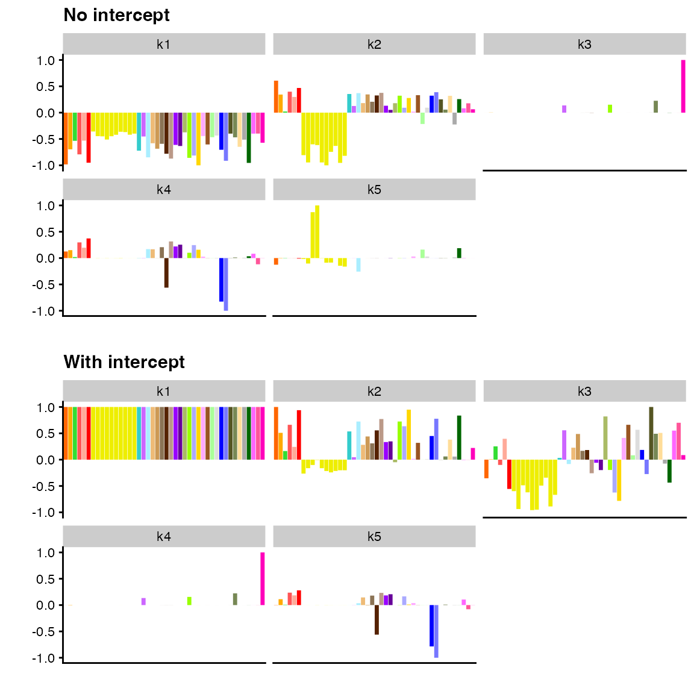

In addition to flashier and ggplot2, we
will make use of package cowplot for arranging plots into
grids and package dplyr for wrangling fitting progress
data:
In addition to the main flash() function,
flashier provides a collection of pipeable
flash_xxx() functions. Any fit produced via
flash() can be rewritten using these functions, which make
the order of fitting operations more explicit and also provide many more
options for customization. For example, the following are
equivalent:
# # Basic interface (not run):
# fit_backfit <- flash(
# gtex,
# greedy_Kmax = 5,
# var_type = 2,
# backfit = TRUE,
# verbose = 0
# )
# Pipeable interface:
t_backfit <- system.time(
fit_backfit <- flash_init(gtex, var_type = 2) |>
flash_set_verbose(verbose = 0) |>
flash_greedy(Kmax = 5) |>
flash_backfit() |>
flash_nullcheck()
)Function flash_init() sets up the flash
object and handles global parameter var_type;
flash_set_verbose() manages the output that will be printed
to console; and flash_greedy(),
flash_backfit(), and flash_nullcheck() perform
the greedy fit, backfit, and nullcheck described in the introductory
vignette.
In many scenarios, the functionality provided by flash()
will be sufficient. Other scenarios will require the additional
flexibility afforded by the pipeable interface, either to achieve
specific goals or to produce multiple alternative fits via non-default
settings. In particular, successfully fitting very large datasets is
often a trial-and-error process of tinkering and customization. Below,
we describe some tasks made possible by the pipeable interface that we
have found particularly useful in our own applications. All examples use
the same gtex dataset that was used in the introductory
vignette.
Since the pipeable interface modularizes operations, it is possible to perform multiple intermediary backfits and nullchecks. Often, re-arranging the order of operations will produce a different fit, either for better or for worse:
# Pipeable interface:
fit_multiple_backfits <- flash_init(gtex, var_type = 2) |>
flash_set_verbose(verbose = 0) |>
flash_greedy(Kmax = 3) |>
flash_backfit() |>
flash_nullcheck() |>
flash_greedy(Kmax = 2) |>
flash_backfit() |>
flash_nullcheck()
c(one_bf_elbo = fit_backfit$elbo, two_bf_elbo = fit_multiple_backfits$elbo)
#> one_bf_elbo two_bf_elbo
#> -80381.75 -80581.18Here, we do not obtain an improvement in ELBO, but results will vary from one scenario to the next.
Function flash() always only uses the greedy algorithm
as initialization for the backfitting algorithm. By using function
flash_factors_init() within a pipeline, we can instead
initialize factor/loadings pairs all at once via svd() (or
any other method) and then subsequently backfit. As argument,
flash_factors_init() takes a list of two matrices
(interpreted as \(L\) and \(F\)) or an “SVD-like object” (that is, a
list containing fields u, d, and
v), so that the output of function svd() can
be passed in directly:
fit_alternative_backfit <- flash_init(gtex, var_type = 2) |>
flash_set_verbose(verbose = 0) |>
flash_factors_init(svd(gtex, nu = 5, nv = 5)) |>
flash_backfit(verbose = 0)
c(bf_elbo = fit_backfit$elbo, alt_bf_elbo = fit_alternative_backfit$elbo)
#> bf_elbo alt_bf_elbo
#> -80381.75 -80629.44Again, we fail to obtain an improvement in ELBO in this particular scenario.
To accelerate backfits, flashier uses an “extrapolation”
technique inspired by Ang and Gillis (2018); for details, see
Willwerscheid (2021). While this can dramatically improve run time for
large datasets, it can be finicky and occasionally results in errors
that are difficult to track down. When odd errors are generated, we
recommend turning off extrapolation as a first troubleshooting step. To
do so, set extrapolate = FALSE in the call to
flash_backfit:
t_no_extrapolate <- system.time(
fit_no_extrapolate <- flash_init(gtex, var_type = 2) |>
flash_set_verbose(verbose = 0) |>
flash_greedy(Kmax = 5) |>
flash_backfit(extrapolate = FALSE) |>
flash_nullcheck()
)
c(extrapolate_elbo = fit_backfit$elbo, no_extrapolate_elbo = fit_no_extrapolate$elbo)
#> extrapolate_elbo no_extrapolate_elbo
#> -80381.75 -80381.76Here, flashier appears to find the same solution with
and without extrapolation, but without the benefit of extrapolation
there is a large increase in run time:
c(t_extrapolate = t_backfit[3], t_no_extrapolate = t_no_extrapolate[3])
#> t_extrapolate.elapsed t_no_extrapolate.elapsed
#> 0.947 2.166In many applications, it is useful to add an “intercept” term to account for, say, differences in mean values from row to row. Here, an intercept might be used to capture effects that are exactly equally shared across all tissues (similar to what is captured by the first factor from previous fits, except that factor values are constrained to be exactly equal rather than estimated as approximately so):
fit_with_intercept <- flash_init(gtex, var_type = 2) |>
flash_set_verbose(verbose = 0) |>
flash_add_intercept(rowwise = FALSE) |>
flash_greedy(Kmax = 4) |>
flash_backfit() |>
flash_nullcheck()
p1 <- plot(
fit_backfit,
pm_which = "factors",
pm_colors = gtex_colors,
plot_type = "bar"
) + ggtitle("No intercept")
p2 <- plot(
fit_with_intercept,
pm_which = "factors",
pm_colors = gtex_colors,
plot_type = "bar"
) + ggtitle("With intercept")
plot_grid(p1, p2, nrow = 2)
In essence, flash_add_intercept() is a convenience
function that initializes the values of the factor or loadings at one
via flash_factors_init() and then fixes those values using
flash_factors_fix(). Thus we could achieve the above fit as
follows:
ones <- matrix(1, nrow = ncol(gtex), ncol = 1)
init_loadings <- matrix(rowMeans(gtex), ncol = 1)
fit_with_intercept <- flash_init(gtex, var_type = 2) |>
flash_set_verbose(0) |>
flash_factors_init(list(init_loadings, ones)) |>
flash_factors_fix(kset = 1, which_dim = "factors") |>
flash_greedy(Kmax = 4) |>
flash_backfit()Many more options are possible using
flash_factors_init() in conjunction with
flash_factors_fix(). For example, after adding an
intercept, we could explicitly add a brain-specific factor by
constraining the values for non-brain tissues to be zero and allowing
values for brain tissues to be estimated:
is_brain <- grepl("Brain", colnames(gtex))
init_loadings <- rowMeans(gtex[, is_brain]) - rowMeans(gtex[, !is_brain])
fit_fixed_pattern <- flash_init(gtex, var_type = 2) |>
flash_set_verbose(0) |>
flash_add_intercept(rowwise = FALSE) |>
flash_factors_init(list(matrix(init_loadings, ncol = 1),
matrix(is_brain, ncol = 1))) |>
flash_factors_fix(kset = 2,
which_dim = "factors",
fixed_idx = !is_brain) |>
flash_greedy(3) |>
flash_backfit()
plot(
fit_fixed_pattern,
pm_which = "factors",
pm_colors = gtex_colors,
plot_type = "bar"
)
By default, the greedy and backfitting algorithms terminate when the
variational lower bound on the log likelihood (ELBO) increases by no
more than \(np \sqrt{\epsilon}\) from
one iteration to the next (where \(\epsilon\) denotes machine epsilon). The
convergence criterion can be changed using function
flash_set_conv_crit().
If we were primarily interested in factor values rather than
loadings, then we might like to terminate when their normalized absolute
values no longer change by more than, say, .001. To confirm that this
criterion is respected, we also modify the output printed to console
using function flash_set_verbose():
gtex_conv_crit <- flash_init(gtex, var_type = 2) |>
flash_set_conv_crit(fn = flash_conv_crit_max_chg_F, tol = .001) |>
flash_set_verbose(
fns = c(flash_verbose_elbo, flash_verbose_max_chg_F),
colnames = c("ELBO", "Max.Chg.Factors"),
colwidths = c(18, 18)
) |>
flash_greedy(Kmax = 3) |>
flash_backfit()
#> Adding factor 1 to flash object...
#> Optimizing factor...
#> Iteration ELBO Max.Chg.Factors
#> 1 -83459.01 3.79e-03
#> 2 -83457.60 2.19e-04
#> Factor successfully added. Objective: -83457.597
#> Adding factor 2 to flash object...
#> Optimizing factor...
#> Iteration ELBO Max.Chg.Factors
#> 1 -81693.22 1.25e-01
#> 2 -81652.56 2.72e-02
#> 3 -81646.81 1.01e-02
#> 4 -81646.03 3.85e-03
#> 5 -81645.93 1.41e-03
#> 6 -81645.91 5.14e-04
#> Factor successfully added. Objective: -81645.912
#> Adding factor 3 to flash object...
#> Optimizing factor...
#> Iteration ELBO Max.Chg.Factors
#> 1 -81412.09 1.16e-01
#> 2 -81368.96 7.56e-02
#> 3 -81358.14 3.87e-02
#> 4 -81357.39 8.20e-03
#> 5 -81357.31 3.45e-03
#> 6 -81357.29 1.36e-03
#> 7 -81357.28 5.08e-04
#> Factor successfully added. Objective: -81357.283
#> Wrapping up...
#> Done.
#> Backfitting 3 factors (tolerance: 1.00e-03)...
#> Iteration Factor ELBO Max.Chg.Factors
#> 1 all -81324.08 2.70e-02
#> 2 all -81314.03 2.90e-02
#> 3 all -81308.99 2.03e-02
#> 4 all -81307.37 1.22e-02
#> 5 all -81307.28 3.65e-03
#> 6 all -81307.10 2.51e-03
#> 7 all -81307.04 1.55e-03
#> 8 all -81307.00 6.35e-04
#> Backfit complete. Objective: -81307.003
#> Wrapping up...
#> Done.Note that flash_set_conv_crit() and
flash_set_verbose() both take functions as arguments.
Several functions flash_conv_crit_xxx() are provided as
alternative convergence criteria, and similar functions
flash_verbose_xxx() simplify the customization of verbose
output. As we demonstrate in the following section, it is also possible
to write functions from scratch.
Custom functions for flash_set_conv_crit() and
flash_set_verbose() require working with
flash_fit objects, which are much less friendly than their
flash counterparts. To ease use, flashier
provides a number of accessor functions flash_fit_get_xxx()
as well as methods fitted(), residuals(), and
ldf() (see the documentation in ?flash_fit for
a full list of helper functions).
Any custom function must take three parameters as input:
curr (the current flash_fit object);
prev (the flash_fit object from the previous
iteration); and k (which gives the index of the factor
currently being optimized by flash_backfit() when
extrapolate = FALSE; if extrapolation has not been turned
off, then k can safely be ignored). For example, let’s say
that we would like to monitor the sparsity of factors 2-5 (which we
define as the mixture weight of the point mass \(\pi_0\) in estimates of priors \(g_f\)) over the course of a backfit. We use
the following custom functions:
verbose_sparsity <- function(new, old, k, f_idx) {
g <- flash_fit_get_g(new, n = 2) # setting n = 2 gets g_f (n = 1 would get g_\ell)
pi0 <- g[[f_idx]]$pi[1] # return point mass weight
return(formatC(pi0, format = "f", digits = 3))
}
verbose_sprs2 <- function(new, old, k) verbose_sparsity(new, old, k, 2)
verbose_sprs3 <- function(new, old, k) verbose_sparsity(new, old, k, 3)
verbose_sprs4 <- function(new, old, k) verbose_sparsity(new, old, k, 4)
verbose_sprs5 <- function(new, old, k) verbose_sparsity(new, old, k, 5)
fit_monitor_sparsity <- flash_init(gtex, var_type = 2) |>
flash_set_verbose(0) |>
flash_greedy(Kmax = 5) |>
flash_set_verbose(
verbose = 3,
fns = c(flash_verbose_elbo, verbose_sprs2, verbose_sprs3, verbose_sprs4, verbose_sprs5),
colnames = c("ELBO", paste0("Sparsity (", 2:5, ")")),
colwidths = rep(14, 5)
) |>
flash_backfit()
#> Backfitting 5 factors (tolerance: 6.56e-04)...
#> Iteration Factor ELBO Sparsity (2) Sparsity (3) Sparsity (4) Sparsity (5)
#> 1 all -80410.68 0.060 0.871 0.605 0.678
#> 2 all -80394.59 0.060 0.888 0.594 0.672
#> 3 all -80387.50 0.069 0.899 0.578 0.669
#> 4 all -80385.00 0.080 0.900 0.557 0.668
#> 5 all -80384.15 0.072 0.900 0.534 0.669
#> 6 all -80383.58 0.061 0.899 0.510 0.670
#> 7 all -80383.35 0.043 0.899 0.492 0.673
#> 8 all -80382.96 0.041 0.899 0.492 0.673
#> 9 all -80382.55 0.038 0.899 0.493 0.673
#> 10 all -80382.27 0.033 0.899 0.493 0.674
#> 11 all -80382.14 0.027 0.899 0.493 0.676
#> 12 all -80382.11 0.025 0.899 0.493 0.676
#> 13 all -80382.08 0.022 0.899 0.493 0.677
#> 14 all -80382.04 0.018 0.899 0.492 0.678
#> 15 all -80381.98 0.011 0.899 0.492 0.679
#> 16 all -80381.90 0.000 0.899 0.492 0.680
#> 17 all -80381.81 0.000 0.899 0.491 0.682
#> 18 all -80381.78 0.000 0.899 0.490 0.685
#> 19 all -80381.77 0.000 0.899 0.490 0.684
#> 20 all -80381.76 0.000 0.899 0.490 0.684
#> 21 all -80381.75 0.000 0.899 0.491 0.684
#> 22 all -80381.75 0.000 0.899 0.491 0.684
#> Backfit complete. Objective: -80381.754
#> Wrapping up...
#> Done.Custom EBNM functions may also be created when specialized prior
families are required. Often it is sufficient to use the helper function
flash_ebnm to pass non-default arguments to function
ebnm() in package ebnm. For example, we might
choose to put a normal prior on the first factor with mode to be
estimated (since we do not expect the first factor to be sparse):
fit_flash_ebnm <- flash_init(gtex, var_type = 2) |>
flash_set_verbose(0) |>
flash_greedy(ebnm_fn = flash_ebnm(prior_family = "normal", mode = "estimate")) |>
flash_greedy(Kmax = 4, ebnm_fn = ebnm_point_normal)
fit_flash_ebnm$F_ghat[[1]]
#> $pi
#> [1] 1
#>
#> $mean
#> [1] -3.214884
#>
#> $sd
#> [1] 1.041558
#>
#> attr(,"class")
#> [1] "normalmix"
#> attr(,"row.names")
#> [1] 1For cases where flash_ebnm() is not sufficient,
completely custom functions can also be created; for details, see the
documentation in ?flash_ebnm. To ensure that the return
object is correctly formatted, we recommend calling into function
ebnm() (with, perhaps, fix_g = TRUE) before
returning. For the sake of illustration, we create an EBNM function
where the prior family \(\mathcal{G}\)
is the family of two-component distributions where one component is a
pointmass at zero and the other is a normal distribution (not
necessarily centered at zero):
ebnm_custom <- function(x, s, g_init, fix_g, output) {
if (fix_g) {
ebnm_res <- ebnm_ash(
x, s, g_init = g_init, fix_g = TRUE, output = output,
mixcompdist = "normal"
)
} else {
# Parameters are:
# 1. mean of normal component
# 2. sd of normal component
neg_llik <- function(par) {
g <- ashr::normalmix(c(0.5, 0.5), c(0, par[1]), c(0, par[2]))
ebnm_res <- ebnm_ash(
x, s, g_init = g, fix_g = FALSE, mixcompdist = "normal"
)
return(-ebnm_res$log_likelihood)
}
# Run optim to get mean and sd of normal component:
opt_res <- optim(
par = c(0, 1), # Initial values
fn = neg_llik,
method = "L-BFGS-B",
lower = c(-Inf, 0.01),
upper = c(Inf, Inf)
)
# Now re-run ash to get mixture weights:
opt_par <- opt_res$par
g <- ashr::normalmix(c(0.5, 0.5), c(0, opt_par[1]), c(0, opt_par[2]))
ebnm_res <- ebnm_ash(
x, s, g_init = g, fix_g = FALSE, output = output,
mixcompdist = "normal"
)
}
return(ebnm_res)
}
fit_custom <- flash_init(gtex, var_type = 2) |>
flash_set_verbose(0) |>
flash_greedy(
Kmax = 2,
ebnm_fn = c(ebnm_point_normal, ebnm_custom)
)
fit_custom$F_ghat
#> [[1]]
#> $pi
#> [1] 0.1698113 0.8301887
#>
#> $mean
#> [1] 0.000000 -3.214882
#>
#> $sd
#> [1] 0.000000 1.041829
#>
#> attr(,"class")
#> [1] "normalmix"
#> attr(,"row.names")
#> [1] 1 2
#>
#> [[2]]
#> $pi
#> [1] 0.3037192 0.6962808
#>
#> $mean
#> [1] 0.0000000 -0.3090665
#>
#> $sd
#> [1] 0.000000 1.523274
#>
#> attr(,"class")
#> [1] "normalmix"
#> attr(,"row.names")
#> [1] 1 2Setting verbose = -1 outputs a single tab-delimited
table of values that makes it straightforward to analyze fitting
progress. The code below backfits with and without extrapolation and
then compares the per-iteration ELBO for each fit. (Since
sink does not play well with R Markdown, this code is not
evaluated.)
sink("zz.tsv")
tmp <- flash_init(gtex, var_type = 2) |>
flash_set_verbose(-1) |>
flash_factors_init(svd(gtex, nu = 5, nv = 5)) |>
flash_backfit()
progress_extrapolate <- read.delim("zz.tsv")
sink()
sink("zz.tsv")
tmp <- flash_init(gtex, var_type = 2) |>
flash_set_verbose(-1) |>
flash_factors_init(svd(gtex, nu = 5, nv = 5)) |>
flash_backfit(extrapolate = FALSE)
progress_no_extrapolate <- read.delim("zz.tsv")
sink()
rm(tmp)
file.remove("zz.tsv")
progress_extrapolate <- progress_extrapolate |>
mutate(Extrapolate = TRUE) |>
select(Iter, ELBO, Extrapolate)
progress_no_extrapolate <- progress_no_extrapolate |>
group_by(Iter) |>
summarize(ELBO = max(ELBO, na.rm = TRUE)) |>
ungroup() |>
mutate(Extrapolate = FALSE)
tib <- progress_extrapolate |>
bind_rows(progress_no_extrapolate) |>
mutate(Iter = as.numeric(Iter),
ELBO = as.numeric(ELBO))
ggplot(tib, aes(x = Iter, y = ELBO, col = Extrapolate)) +
geom_line() +
theme_minimal()The following R version and packages were used to generate this vignette:
sessionInfo()
#> R version 4.3.3 (2024-02-29)
#> Platform: aarch64-apple-darwin20 (64-bit)
#> Running under: macOS Sonoma 14.5
#>
#> Matrix products: default
#> BLAS: /Library/Frameworks/R.framework/Versions/4.3-arm64/Resources/lib/libRblas.0.dylib
#> LAPACK: /Library/Frameworks/R.framework/Versions/4.3-arm64/Resources/lib/libRlapack.dylib; LAPACK version 3.11.0
#>
#> locale:
#> [1] en_US.UTF-8/en_US.UTF-8/en_US.UTF-8/C/en_US.UTF-8/en_US.UTF-8
#>
#> time zone: America/Chicago
#> tzcode source: internal
#>
#> attached base packages:
#> [1] stats graphics grDevices utils datasets methods base
#>
#> other attached packages:
#> [1] dplyr_1.1.4 cowplot_1.1.3 ggplot2_3.5.0 flashier_1.0.53
#> [5] ebnm_1.1-34
#>
#> loaded via a namespace (and not attached):
#> [1] tidyselect_1.2.1 viridisLite_0.4.2 farver_2.1.1
#> [4] fastmap_1.1.1 lazyeval_0.2.2 digest_0.6.34
#> [7] lifecycle_1.0.4 invgamma_1.1 magrittr_2.0.3
#> [10] compiler_4.3.3 rlang_1.1.3 sass_0.4.8
#> [13] progress_1.2.3 tools_4.3.3 utf8_1.2.4
#> [16] yaml_2.3.8 data.table_1.15.2 knitr_1.45
#> [19] prettyunits_1.2.0 labeling_0.4.3 htmlwidgets_1.6.4
#> [22] scatterplot3d_0.3-44 RColorBrewer_1.1-3 Rtsne_0.17
#> [25] withr_3.0.0 purrr_1.0.2 desc_1.4.3
#> [28] grid_4.3.3 fansi_1.0.6 fastTopics_0.6-184
#> [31] colorspace_2.1-0 scales_1.3.0 gtools_3.9.5
#> [34] cli_3.6.2 rmarkdown_2.26 crayon_1.5.2
#> [37] ragg_1.2.7 generics_0.1.3 RcppParallel_5.1.7
#> [40] httr_1.4.7 pbapply_1.7-2 cachem_1.0.8
#> [43] splines_4.3.3 parallel_4.3.3 softImpute_1.4-1
#> [46] vctrs_0.6.5 Matrix_1.6-5 jsonlite_1.8.8
#> [49] hms_1.1.3 mixsqp_0.3-54 ggrepel_0.9.5
#> [52] irlba_2.3.5.1 horseshoe_0.2.0 systemfonts_1.0.6
#> [55] trust_0.1-8 plotly_4.10.4 jquerylib_0.1.4
#> [58] tidyr_1.3.1 glue_1.7.0 pkgdown_2.0.7
#> [61] uwot_0.1.16 Polychrome_1.5.1 gtable_0.3.4
#> [64] quadprog_1.5-8 munsell_0.5.0 tibble_3.2.1
#> [67] pillar_1.9.0 htmltools_0.5.7 truncnorm_1.0-9
#> [70] R6_2.5.1 textshaping_0.3.7 evaluate_0.23
#> [73] lattice_0.22-5 highr_0.10 RhpcBLASctl_0.23-42
#> [76] memoise_2.0.1 SQUAREM_2021.1 ashr_2.2-66
#> [79] bslib_0.6.1 Rcpp_1.0.12 deconvolveR_1.2-1
#> [82] xfun_0.42 fs_1.6.3 pkgconfig_2.0.3